Start End Experience: A Maratona de Empregabilidade Jovem
A Maratona Start End Experience é um evento de imersão que simula o ciclo completo de um profissional, desde a capacitação (Start) até a experiência real de trabalho (End).

Reconhecimento Nacional

Prêmio Educação Empreendedora
Apoio SEBRAE Nacional

Top 3 Jaraqui Graúdo 2023
O CICLO START-END: DA TEORIA À VAGA GARANTIDA
1. Start: Capacitação Intensiva
Jovens participam de workshops rápidos, bootcamps e desafios de competências (muitas vezes via Game APZ). Foco em currículo, entrevista, comunicação e soft skills.
2. Experience: Desafio Prático
Simulação de um dia de trabalho real na empresa parceira ou resolução de cases de mercado. É aqui que o perfil comportamental e as habilidades técnicas são testadas sob pressão.
3. End: Conexão e Contratação
Os jovens com melhor desempenho recebem feedback direto dos RHs e são encaminhados prioritariamente para as vagas de Aprendiz da empresa patrocinadora.
RESULTADO: Seleção precisa para empresas, primeira oportunidade garantida para jovens.
Benefícios para Empresas Parceiras e Patrocinadoras
Seleção Imersiva
Avalie os candidatos em um ambiente prático e dinâmico, simulando a realidade da sua empresa antes da contratação.
Branding e ESG
Fortaleça sua marca empregadora junto à Geração Z e gere dados concretos para o pilar Social (S) dos relatórios ESG.
Redução de Turnover
Ao alinhar expectativas no Experience, a Maratona garante que o jovem contratado se adapte melhor, reduzindo a rotatividade.
Alinhamento Curricular
A Maratona serve de base para Entidades Formadoras, ajustando a capacitação às necessidades reais da sua indústria ou setor.
TRANSFORME SEU PROCESSO SELETIVO EM UM EVENTO DE TALENTOS
Patrocine ou participe da próxima Maratona Start End Experience e encontre seus próximos jovens líderes.